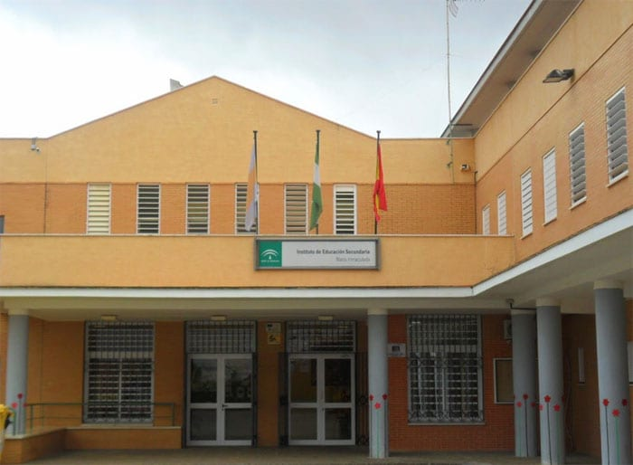

Centro escolar:
IES María Inmaculada

Maestro:
Pedro Antonio Soto Enriquez.
Teoría
Temas
Ordenadores:
- Ordenador 1
- Ordenador 2
- Ordenador 3
- Ordenador 4
- Ordenador 5
- Ordenador 6
- Ordenador 7
- Ordenador 8
- Ordenador 9
- Ordenador 10
- Ordenador 11
- Ordenador 12
- Ordenador 13
- Ordenador 14
- Ordenador 15
- Ordenador 16
- Ordenador 17
- Ordenador 18
Número de alumnos
Hay 28 alumnos
(Cada ordenador es usado por 2 alumnos cada uno).